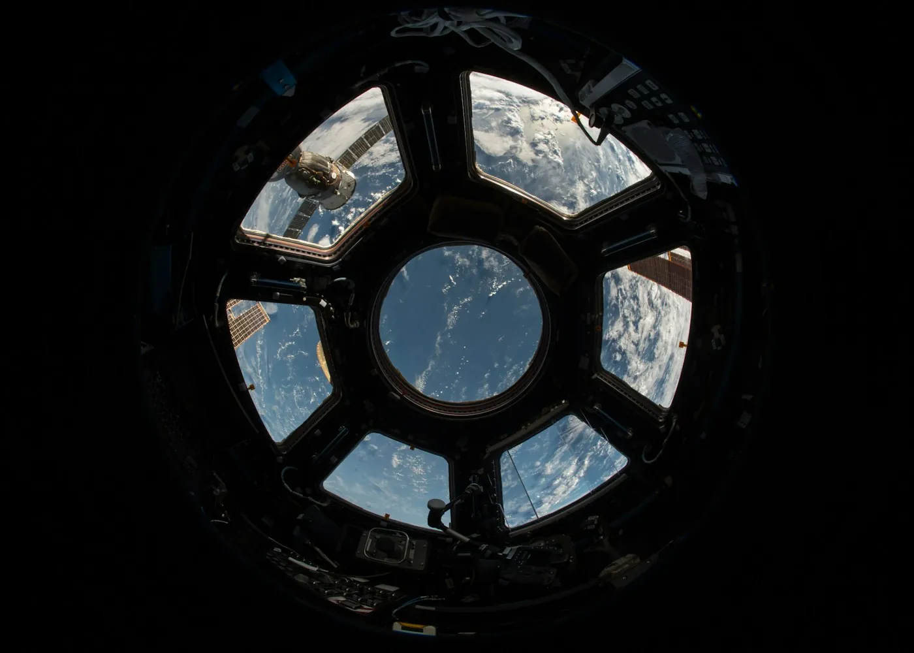
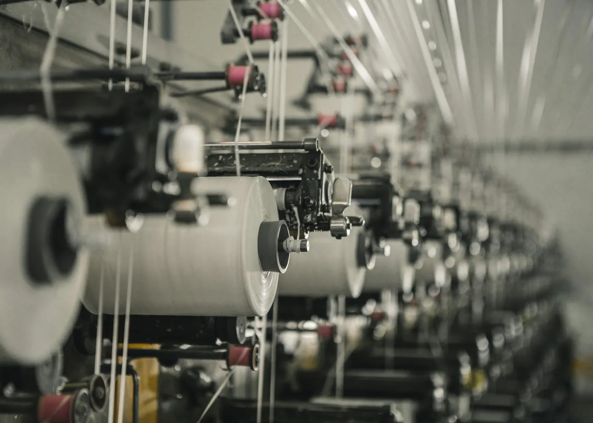

Sleepwear that adjusts through the night
Rooms warm up and cool down while children sleep, but their sleepwear stays the same. Inspired by temperature-management technology first explored for space, we built a fabric that responds.

Four steps, from capsule to comfort
- 1Microcapsules
Microscopic capsules hold a phase-change material that can absorb, store and release heat.
- 2PCM Lyocell yarn
The capsules are built into the Lyocell yarn itself, not coated on top.
- 3Our AeroCool fabric
That yarn is knitted with cotton into a soft, lightweight 70/30 blend.
- 4Temperature response
As they warm, it absorbs heat. As the room cools, it gives it back, smoothing out the changes.
In three prints, from newborn to four
The AeroCool sleepsuit for 0–12 months and PJ set for 12 months to 4 years.
Shop AeroCool
What touches little skin matters
Material selection, supplier checks and fabric performance testing are part of how each garment is developed. Test results and certificates will be listed here once confirmed.